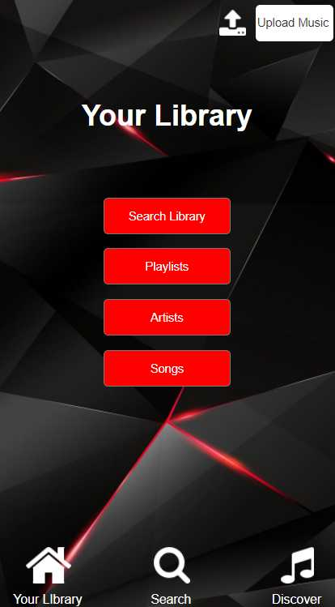

What is this?
A music application I designed independently for COGS 187A: Usability & Information Architecture.
The Process
(This will be expanded on soon!)
Interviews | Comparisons | Competitive Analysis | Design
Defining Design Decisions
1. Icon Bar
Both Apple Music and Spotify have a “Radio” section, which I chose not to include in my app. Apple Music has separate
sections for browsing for new music and seeing music tailored to the user’s tastes; I decided to combine these into a
“Discover” section. Spotify has a separate home page, showing mostly music suggestions. Since those are already included in
my Discover section, I made the homepage the user’s library, since that is what they will use the most.
2. Uploading Music Shortcuts
I didn’t want to restrict my users to the music offered through the app, and wanted to make sure they had the ability to
upload their own music, either straight into their library or into a playlist. If they wanted to upload music straight into
their library, I thought it would be best to show them that option right away, so I put it in the top right corner. If they
were creating a new playlist, or editing a current one, and wanted to upload their own music, I put another option for
uploading music in that section.
3. Back Buttons
If the user had entered into a section within their library, the search section, or the discover section, I wanted them to be
able to backtrack without having to click on the icon bar, resetting their location within the app. So, within the sections
in the icon bar sections, I included a back button on the pages so that the user could go back only the number of steps they
needed to.